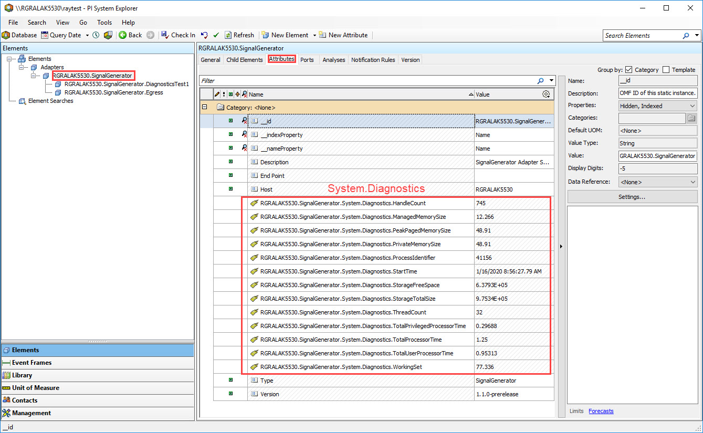

Adapter diagnostics
The Diagnostics.System dynamic type includes the following values which are logged in a stream with the id System.Diagnostics. This diagnostic stream contains system level information related to the host platform that the adapter is running on.
| Type | Property | Description |
|---|---|---|
| string | timestamp | Timestamp of event |
| int | ProcessIdentifier | Process id of the host process |
| string | StartTime | Time at which the host process started |
| long | WorkingSet | Amount of physical memory in bytes, allocated for the host process |
| double | TotalProcessorTime (uom=s) | Total processor time for the host process expressed in seconds |
| double | TotalUserProcessorTime (uom=s) | User processor time for the host process expressed in seconds |
| double | TotalPrivilegedProcessorTime (uom=s) | Privileged processor time for the host process expressed in seconds |
| int | ThreadCount | Number of threads in the host process |
| int | HandleCount | Number of handles opened by the host process |
| double | ManagedMemorySize (uom=MB) | Number of bytes currently thought to be allocated in managed memory |
| double | PrivateMemorySize (uom=MB) | Amount of paged memory, in bytes, allocated for the host process |
| double | PeakPagedMemorySize (uom=MB) | Maximum amount of memory in the virtual memory paging file, in bytes, used by the host process. |
| double | StorageTotalSize (uom=MB) | Total size of the storage medium in use by the system |
| double | StorageFreeSpace (uom=MB) | Free space available |
Each adapter component produces its own diagnostics streams.
REST URLs
| Relative URL | HTTP verb | Action |
|---|---|---|
api/v1/configuration/system/diagnostics |
GET |
Gets the diagnostics configuration |
api/v1/configuration/system/diagnostics |
PUT |
Replaces the existing diagnostics configuration |
Examples
Retrieve the diagnostics configuration through REST client
curl -X GET http://localhost:{port}/api/v1/configuration/system/diagnostics
Sample output:
{
"enableDiagnostics": true
}
Configure diagnostics through REST client
curl -X PUT http://localhost:{port}/api/v1/configuration/system/diagnostics -H 'Content-Type: application/json' -d '{ "enableDiagnostics": true }'
In the previous examples, port refers to the configured port for the adapter to run on.
If successful, the methods returns a 204 No Content response code.
AF structure
After running diagnostics with a health endpoint configured to a PI server, you can use PI System Explorer to view the diagnostics for a given adapter. The element hierarchy is shown in the following image.

Note:
- The_Elements root contains a link to an Adapters_ node. This is the root note for all adapter instances.
- Below Adapters there will be one or more adapter nodes. Each node's title is defined by the node's corresponding computer name and service name in this format:
_**{ComputerName}.{ServiceName}**_. For example, in the following image, RGRALAK5530 is the computer name, and SignalGenerator is the service name. - To see the System.Diagnostics values, clicking on an adapter node and set the tab to Attributes. Example values are shown in the image.